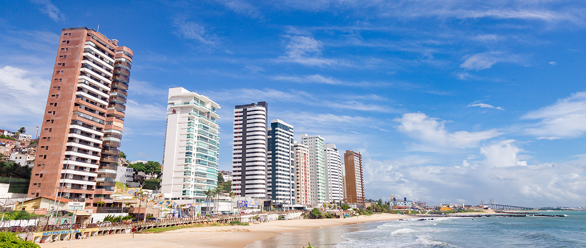

O Rio Grande do Norte é o maior produtor de sal marinho do Brasil. Os principais produtos agrícolas do estado são a cana-de-açúcar e diversas frutas, como banana, abacaxi, melão, melancia e caju. Na criação de animais, o Rio Grande do Norte se garante como maior produtor de camarão do Brasil.
